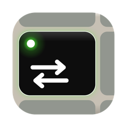
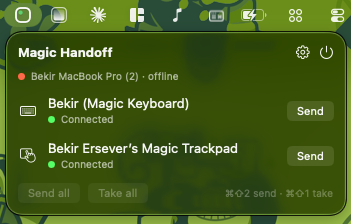

Magic Handoff
Move your Magic Keyboard, Magic Trackpad and Magic Mouse between two Macs with one keystroke. No cables, no re-pairing, no Bluetooth menu.
or install with Homebrew
brew install --cask bekir1184/tap/magic-handoff

How you use it
Give each Mac a number in Settings. Press ⌘⇧2 on the keyboard and it, along with the trackpad and mouse, hops to your other Mac. Press ⌘⇧1 there to bring everything back. A full switch takes about five seconds.
What it does
- One keystrokeTwo hotkeys stand for your two Macs. Pressing the key of the Mac that already has the devices does nothing, so you can hit it twice without thinking.
- Menu bar statusThe dot in the icon turns green when every device is on this Mac. You can also move a single device from the menu.
- Sleep awareClose the lid and the devices move to your other Mac, but only when someone is actually at it. If that Mac is asleep too, they stay where they are.
- Handles the awkward casesIf the devices are stuck with a Mac that is asleep, closed or switched off, the app says what frees them and finishes the switch on its own as soon as that happens.
- Private by designThe two Macs talk directly over your local network, encrypted with a key derived from a code you type once. Nothing goes to the internet, and no account is needed.
What you need
- Two Macs running macOS 14 Sonoma or later, on the same Wi-Fi or wired network.
- A Magic Keyboard, Magic Trackpad or Magic Mouse, the Bluetooth models.
- Each Mac needs its own input to fall back on while the Magic devices are elsewhere, such as a MacBook's built-in keyboard and trackpad.
Setting it up
- Install the app on both Macs and open it. A short setup explains each permission and what stops working without it.
- One Mac shows a pairing code. Type it into the other. They find each other from there.
- Give one Mac ⌘⇧1 and the other ⌘⇧2, and you are done.
Permissions it asks for
| Permission | Why | Without it |
|---|---|---|
| Bluetooth | Releasing and connecting the devices | Nothing works |
| Local Network | Finding your other Mac | No automatic switching |
| Input Monitoring, optional | Driving the keyboard's Caps Lock light | Everything works, no light |